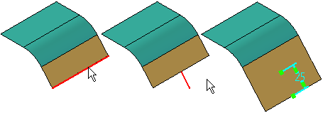
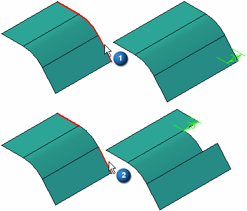
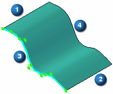

Extend command
Use the Extend surface command to extend a surface along one or more selected edges.

The selected edges can form a continuous chain (1) or be interrupted (2).

The extend options which are available depend on whether the surface is an analytic surface or a non-analytic surface. Examples of analytic surfaces include planes, partial cylinders, cones, spheres, and tori. Sweeping or extruding a b-spline curve creates non-analytic surfaces. Constructing lofted, swept or BlueSurf features using b-spline curves also creates non-analytic surfaces.
When extending a non-analytic surface, specify whether the extension is, Linear, Curvature Continuous or Reflective along certain types of edges. For example, when extending an extruded surface constructed using a b-spline curve, specify the Linear Extend, Curvature Continuous Extend, or Reflective Extend options for the two edges which are parallel to the input b-spline curve (1, 2).
For the two edges which are perpendicular to the input b-spline curve (3, 4), only the Curvature Continuous option is mathematically possible.

Additional examples are illustrated in the Extend Surface command bar topic.